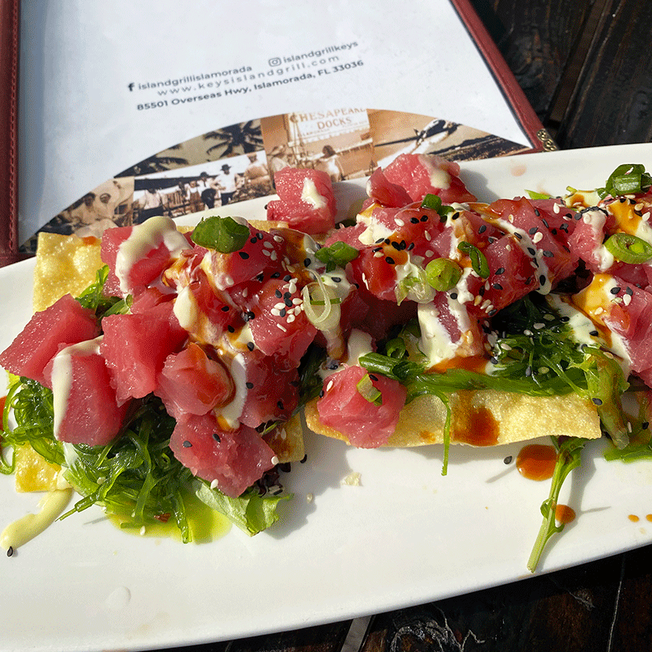

This is always the first stop for my family when we’re all down in Key Largo together. The view from their outdoor seating is absolutely amazing and there is usually live music to accompany your meal. My favorite thing to get is the fish tacos as they have a huge selection of seafood options, but they also have salads, sandwiches, and if you’re over 21, a must try selection of cocktails. It’s always a fun and lively atmosphere, and the perfect place to go with friends. And if you’re feeling extra fun, book their floating Tiki Bar, a Tiki Bar that floats on the water for you and your friends or family to enjoy.
Snooks
Alabama Jacks
If this name sounds familiar, you may have caught the episode of Diners, Drive-ins, and Dives featuring their famous conch fritters. Located all the way down card sound road, a road with, well, nothing except crocodiles until you hit what looks like a shack about to fall into the water. But go inside to find a fun atmosphere of boaters, bikers, and everyone in between. Their extensive menu features fresh seafood, classic sandwiches, and huge sample platters if you can’t decide what to get. If you’re lucky, you might get some live music and definitely don’t forget to pick up a t-shirt on your way out.

Island Grille
What’s better than nachos? Tuna nachos. Enough said. Okay, I’ll tell you a little about our next stop, Island Grille. We actually stumbled upon this place by accident, but I can confidently tell you I left very full and very happy. My group split a bunch of their delicious apps like the tuna nachos and guac and chips, and they have a variety of main dishes from fish tacos, to burgers, to sandwiches, salads, and sushi. There truly is something for everyone here.
Grati Cafe
Stop at Grati Cafe for paddle board tours and rentals… oh and their island fusion cafe! Not only does this place offer a great selection of delicious healthy foods, you can even take a paddleboard tour of Key Largo’s beautiful waters and ecosystems. I’m a big fan of their classic acai bowl, but they have smoothies, sandwiches, avocado toasts, and salads. The perfect pick-me-up after a long day in the sun.